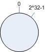
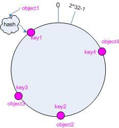
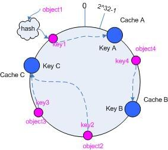
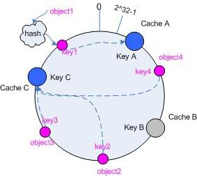
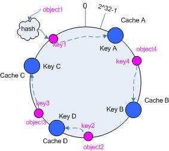
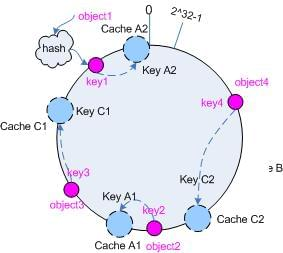
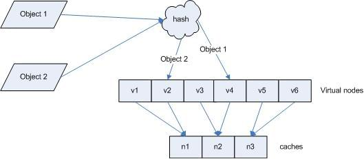

一致性Hash算法（Consistent Hashing）
本文主要翻译自：https://www.codeproject.com/Articles/56138/Consistent-hashing
1. 问题提出
Hash算法经常出现在如分布式缓存，负载均衡等场景中，典型的算法是对N取余：
key = hash(value) % N |
David Karger及其合作者列出了使得一致哈希在互联网分布式缓存中非常有用的几个特性： [1]
- 冗余少
- 负载均衡
- 过渡平滑
- 存储均衡
- 关键词单调
假设，当前有3台Cache Server，
- 在考前流量集中，需要增加2台Server，key = hash(value) % 5
- 在考中一台Server挂掉，key = hash(value) % 4
这意味这，在这些场景中，大部分缓存都将失效。缓存单调性无法满足，过渡也不平滑。
2. 解决方案
2.1 一致性hash算法
一致性hash算法采用环形Hash，把key hash到2^32个位置组成一个环。

现在考虑有object1-obejct4，使用一致性hash算法，让key1-key4落在圆环上。

hash(object1) = key1 |
让key找到cache节点：让key1顺时针查找，找到最近的cacheA，以此类推。

2.2 考虑Cache挂掉的情况
如果现在Cache B挂了，落在Cache B上的节点是object4，只需要把object4顺时针映射到Cache C上即可，其他节点无需变动。理想情况下Cache C需要承受2N的流量。

2.3 考虑Cache增加的情况
增加一个Cache D。object2按照顺时针找到Cache D，其他节点也无需变动。

3. 优化
上面解决了一致性的问题。但是Cache还不够平衡。为了解决平衡问题，引入了虚拟节点（Vitural Nodes）。在圆环上不是实际的Cache Node，而是把一个Cache分为多个虚拟Node，通过增加Cache Vitural Node来平衡增加或删除Cache的影响。

通过增加一部虚拟Node到真实Node的映射，达到更平衡的hash.
objec1->cache A2; objec2->cache A1; objec3->cache C1; objec4->cache C2 |

4. 参考文档
- https://www.akamai.com/us/en/multimedia/documents/technical-publication/consistent-hashing-and-random-trees-distributed-caching-protocols-for-relieving-hot-spots-on-the-world-wide-web-technical-publication.pdf
- http://www.jianshu.com/p/e8fb89bb3a61#
- http://www.zsythink.net/archives/1182
- https://www.codeproject.com/Articles/56138/Consistent-hashing
- https://zh.wikipedia.org/wiki/%E4%B8%80%E8%87%B4%E5%93%88%E5%B8%8C